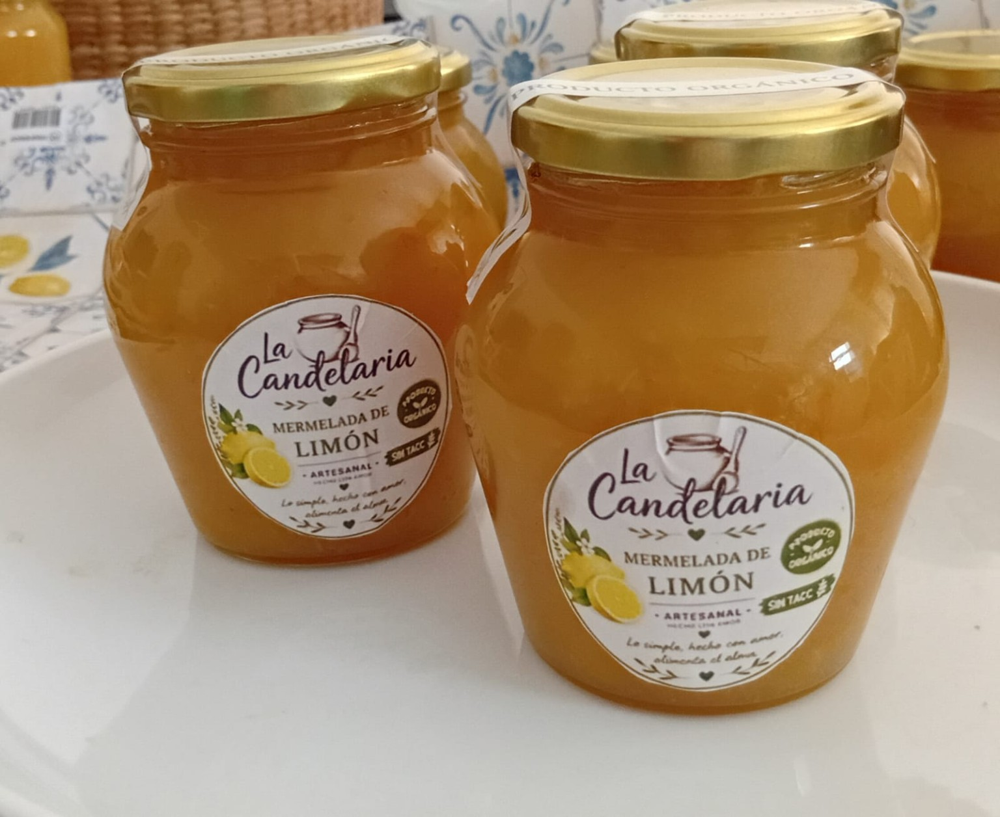
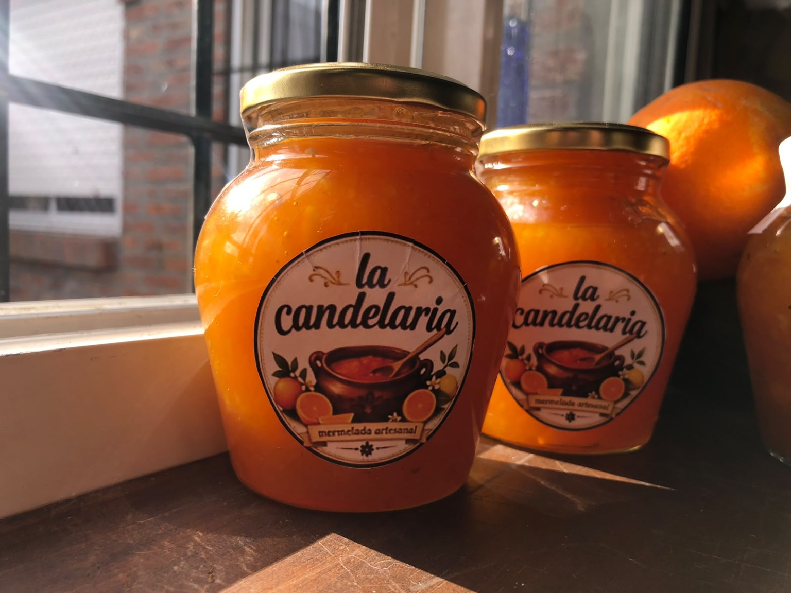
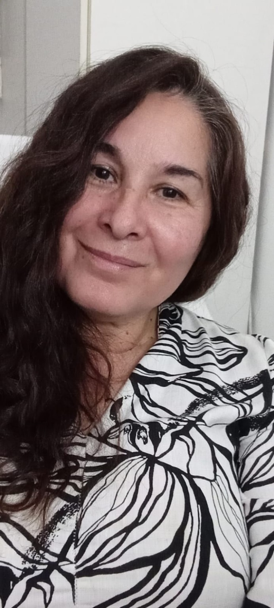
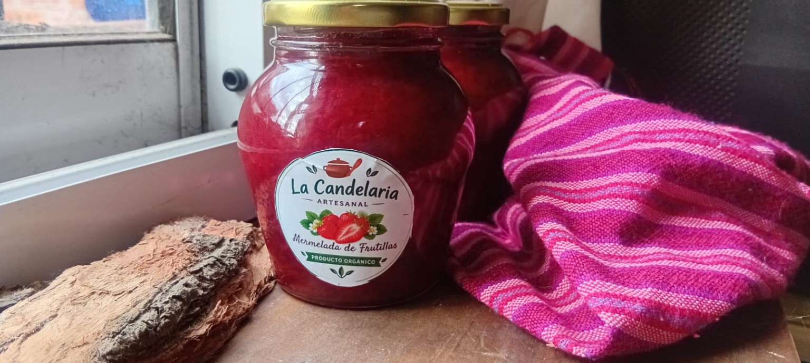
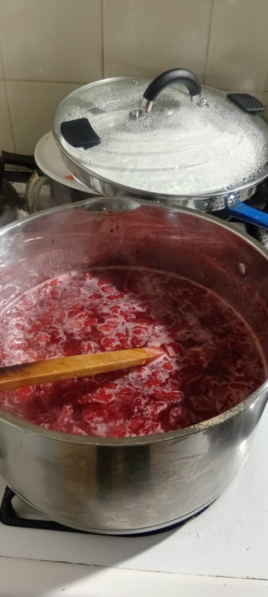
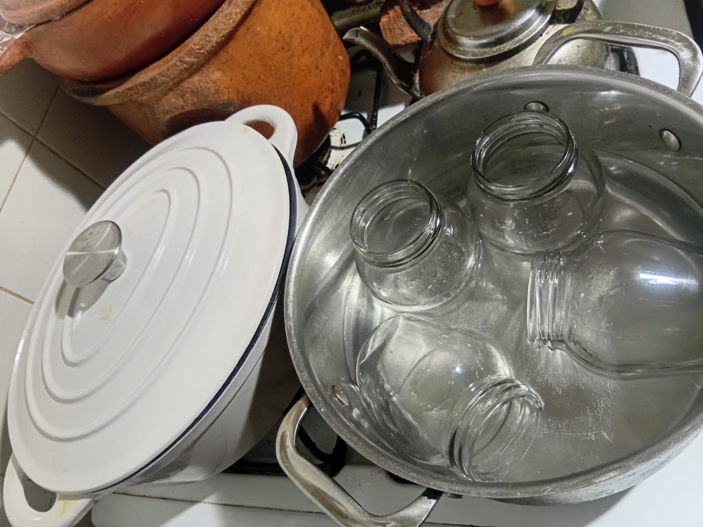

Frutas de estación
Mermelada de limón
Una preparación artesanal que captura el carácter de los cítricos. Consultá disponibilidad.
☏ Consultar por WhatsAppMermeladas artesanales elaboradas con frutas frescas de estación. Un homenaje a nuestras raíces, a los recuerdos de familia y a las cosas hechas con amor.

Hay recuerdos que permanecen con nosotros para siempre. A veces tienen un aroma, un sabor o la calidez del sol entrando por una ventana.
De chica veía a mi abuela cocinar. Los domingos por la mañana escuchaba un programa de radio llamado Almacén Candelaria, mientras el sol iluminaba su cocina. Esos momentos quedaron guardados en mi memoria.
En 2026 decidí unir lo que sé de gastronomía, el cuidado ambiental aprendido en mi formación en Turismo y el bienestar de hacer algo que me representa. Así nacieron mis mermeladas artesanales, elaboradas con frutas frescas de estación.
Elegí el nombre La Candelaria en memoria de mi abuela y como una forma de expresar mi gratitud por todo lo compartido.

El sabor de la fruta de cada estación, en su mejor momento.

Una preparación artesanal que captura el carácter de los cítricos. Consultá disponibilidad.
☏ Consultar por WhatsApp
El sabor de las frutillas frescas en una preparación artesanal. Consultá disponibilidad.
☏ Consultar por WhatsAppUna dulzura para acompañar desayunos, meriendas y encuentros. Consultá por las presentaciones disponibles.
☏ Consultar por WhatsApp

Cuidar lo que hacemos significa respetar los ingredientes, el proceso y nuestro entorno.
Elegimos trabajar con frutas de temporada, sin utilizar fruta congelada.
Una forma de cocinar que recupera el valor de los sabores caseros y la dedicación personal.
Los envases de vidrio pueden volver a tener una nueva oportunidad.
Traé tu frasco cuando vuelvas a comprar y recibí un descuento. Consultanos las condiciones.
Consultá por la devolución →Ideas sencillas para compartir la dulzura de cada temporada.
Pan recién tostado, un poco de manteca y tu mermelada favorita.
Sumá una cucharada de mermelada a yogur natural, semillas o granola.
Probá los sabores de estación como acompañamiento de quesos y postres.
¿Querés saber qué sabores hay disponibles, consultar por un encargo o devolver tus frascos? Escribile directamente a Vero.
Verónica Muñoz
Venado Tuerto · Santa Fe · Argentina
Estamos disponibles por WhatsApp para conversar sobre variedades de temporada y encargos.
+54 9 3462 66-0375